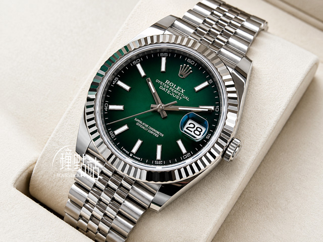

PILATIQUE 品牌介紹頁直書、直式影像、暖紙與深墨
以宋體直排標題與原比例 9:16 動作影像為主軸，放慢閱讀節奏；團體課與私人課以兩張空間照片錯位並置。三段影片一次只播一段，可暫停、開聲音，減少動態偏好下不自動播放。
品牌介紹與商品展示，兩種不同的設計方向。
以宋體直排標題與原比例 9:16 動作影像為主軸，放慢閱讀節奏；團體課與私人課以兩張空間照片錯位並置。三段影片一次只播一段，可暫停、開聲音，減少動態偏好下不自動播放。

把頁面當成一張錶商目錄卡：奶油色襯墊舞台承接六張實拍（不超過原始 640×480 顯示），型號用等寬字、尺寸與價格用 Didot 數字，規格依識別／外觀／機芯分組。價格旁直接標示原示範快照說明，不提供購買或預約流程。